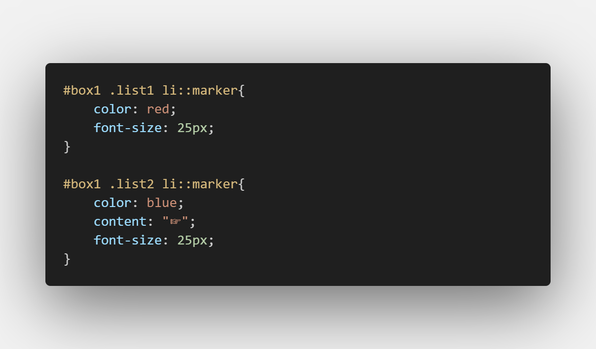

Only certain CSS properties can be used in a rule with
::marker as a selector:
- All font properties
- The white-space property
- color
- text-combine-upright, unicode-bidi and direction properties
- The content property
- All animation and transition properties
Examples
- Orange
- Apple
- Banana
- Grapes
- Orange
- Apple
- Banana
- Grapes
